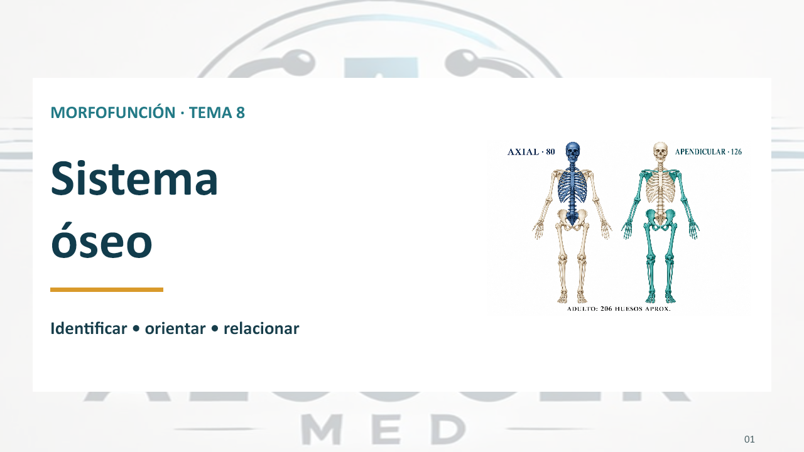

TÉCNICA ALCOCER MED · TEMA 8
Sistema óseo
42 diapositivas visuales y guion del estudiante con explicaciones y ayuda memoria.
Descargar PowerPoint (.pptx)Descargar guion del estudiante (.pdf)En tu celular, revisa la carpeta Descargas después de pulsar el botón.Vista previa

Abrir lámina de IntocablesAbrir mapa mentalIr a Juegos